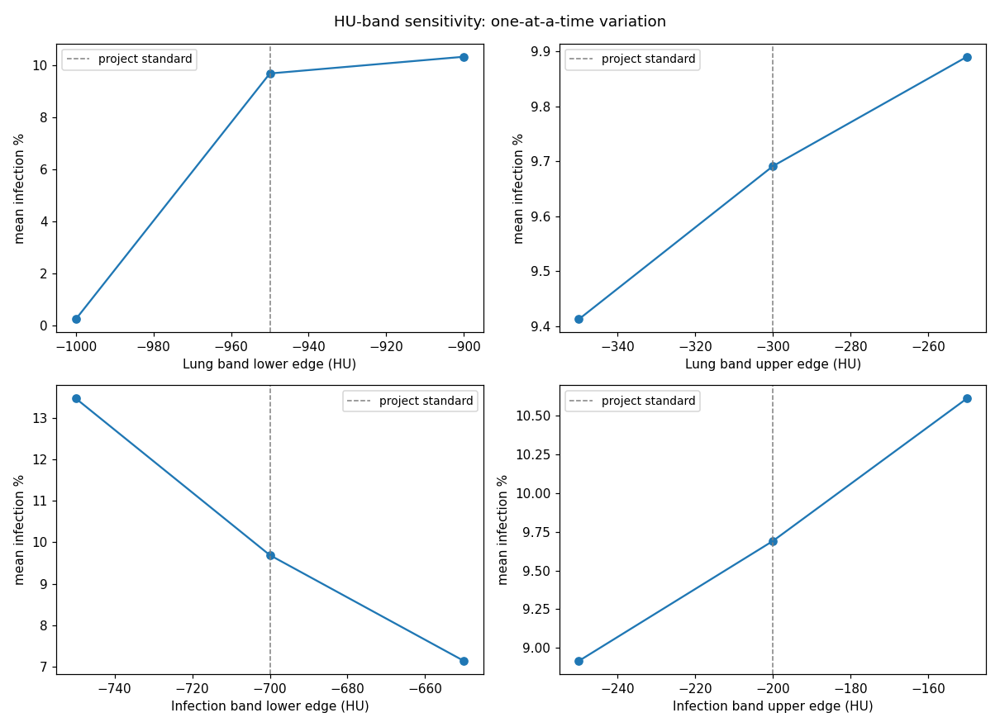
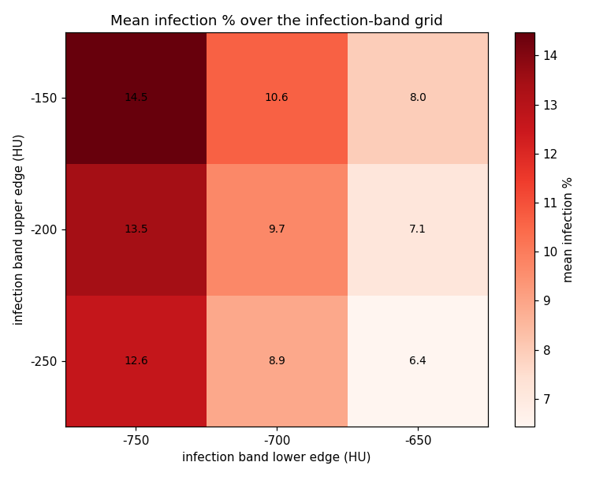

This page runs a simple, interpretable pipeline on a chest CT series from a COVID-positive patient: threshold the Hounsfield units to find the lungs, threshold again to find infected-looking tissue (ground glass in the -700 to -200 HU band), and report what fraction of the lung is affected. No neural network, no black box. Every image and number below is precomputed from the real 255-slice scan; the method and its limits are described further down.
Demo only, not a medical device. The scans come from the public MIDRC-RICORD-1A research dataset.
Slice viewer: the full series
All 255 axial slices of the RICORD series, segmented with the pipeline below. Drag the slider or use the arrow keys to move through the scan; toggle the infection overlay.
Slice 128 of 255
| Slice index | - |
| Lung voxels | - |
| Infected voxels | - |
| Slice HU min / mean / max | - |
Precomputed with the segmentation pipeline described below; slice masks use the same fixed metric (infected voxels inside the lung mask). The interval is a Wilson score interval for the infected-voxel fraction, computed in your browser from the slice counts.
Pipeline run, step by step
The production pipeline in the repo (pipeline/) walks a DICOM tree, converts each series to NIfTI, and writes a versioned Parquet manifest that every downstream step reads. This is the actual run behind this page, stage by stage, with the real values from its artifacts. Click a stage to inspect it.
Ingest: DICOM → NIfTI → manifest
pipeline/ingest.py (pydicom → nibabel) converted the series and wrote
manifest.parquet under contract manifest/1.0:
| Field | Value |
|---|---|
| Series in manifest | 1 |
| Slices | 255 |
| HU range over the volume | [-3024, 1857] |
| Series UID | 1.2.826.0.1.3680043.10.474.419639… |
| Patient | MIDRC-RICORD-1A-419639-000082 |
Validate: schema, identity, eligibility gates
pipeline/validate.py (pandera + the eligibility rule) checked the manifest
against its contract and wrote validation_report.json:
Rejected series are quarantined with a machine-readable reason instead of being silently dropped.
Eligibility: is this series analyzable?
A series enters the analysis table only if all four of these hold:
- Modality is CT.
- The series description does not name a localizer, scout, or topogram survey.
- ImageType is ORIGINAL: no derived or secondary reformats, MIPs, or minIPs.
- The acquisition geometry is axial (ImageOrientationPatient near the canonical [1,0,0,0,1,0]).
Verdict on this series: eligible axial diagnostic CT.
The rule is deliberately conservative: a series that cannot be proven axial and diagnostic is rejected. A rejected series can be whitelisted explicitly with a written reason, never by weakening the defaults.
Quantify: the fixed metric
pipeline/quantify.py segmented lungs (HU [-950,-300]) and infection (HU [-700,-200]);
the numerator counts infected voxels inside the lung mask, so the percentage can never exceed 100:
| Field | Value |
|---|---|
| Lung band | [-950, -300] HU |
| Infection band | [-700, -200] HU |
| Code hash | bfc77cf3e707 |
| Git SHA | d28bbc0 |
| Run | 20261005T221101Z |
Refresh: versioned results
pipeline/refresh.py stamped the results as quantification_v20261005T221101Z:
every refresh carries its timestamp, code hash, and git SHA, so any number on this page can be
traced back to the exact code that produced it. The repo carries 30 tests, DVC stages, a
Dockerfile, and CI for the pipeline.
How the pipeline works
The segmentation runs in three stages, all with fixed, interpretable parameters:
- Lung mask. Keep voxels between -950 and -300 HU, fill holes, compute a distance map, run a watershed split, keep the largest region, and smooth with a median filter of radius 5. This is the standard cheap lung segmentation; it can leak into bowel gas or miss collapsed lung.
- COVID lesion mask. Inside the lung mask, keep voxels between -700 and -200 HU, then median-filter with radius 2 to drop specks. This band covers ground-glass opacity, the hallmark COVID pattern on CT, but it also catches vessels, partial-volume edges, and motion blur. A threshold cannot tell those apart.
- Quantification. Infection percentage = infected voxels ÷ lung voxels × 100, per slice and for the whole scan. The original version of this project divided by the wrong denominator and reported values over 100%; that bug is fixed here and documented in the repo.
On the full scan (255 slices, one patient) the fixed method finds 9.69% of lung volume affected. Full analysis, figures, and code: github.com/nepalanurag/Biomedical-Imaging-Analysis.
Data: MIDRC-RICORD-1A (RSNA International COVID-19 Open Radiology Database), via The Cancer Imaging Archive, CC BY-NC 4.0. One COVID-positive chest CT series used here.
Try your own image
Upload a lung-window CT slice (grayscale PNG or JPEG). The page shows it and gives a rough on-screen estimate by inverting the standard lung window back to approximate Hounsfield units. This is approximate: there is no lung mask in the browser, so treat it as a sketch, not a measurement. The viewer above carries the real segmented results.
Across patients
Infection percentages were computed for every scan series in the study set. Series reporting above 100% are an artifact of the old denominator bug and are dropped, matching the original analysis. That leaves 206 series from 109 patients.
A note on the numbers: the chart below shows the legacy study table, where series above 100%
were dropped to match the original analysis. The repo now also carries a curated version of
that table (infection_quantification_by_subject_curated.csv): the new
series-eligibility rule keeps 154 axial diagnostic series and excludes 75 scout, localizer,
and reformat series. Four kept rows still carry values above 100% from the pre-consolidation
numerator; they are kept as-is and flagged for recomputation on the next refresh, not silently
dropped. Details in the curation panel under Production pipeline.
Distribution of infection percentage across the 206 kept series. Data: infection_quantification_by_subject.csv in the repo.
Production pipeline
The method above now runs inside a production ingestion pipeline in the repo (pipeline/). It walks a DICOM tree, converts each series to NIfTI, and writes a versioned Parquet manifest that every downstream step reads. Validation gates check the schema contract, the de-identification pattern, and the series-eligibility rule before anything is quantified. Rejected series are quarantined with a machine-readable reason instead of being silently dropped, and every refresh is stamped with a timestamp, code hash, and git SHA. The repo carries 30 tests, DVC stages, a Dockerfile, and CI for the pipeline.
Validation on the real series
End-to-end run on the 255-slice RICORD series used in this demo:
Whole-scan result: 9.69% of lung volume infected, 95% CI [9.67, 9.71], from 682,603 infected voxels out of 7,043,692 lung voxels.
Series curation
The eligibility rule was applied to the legacy 229-row study table. 75 series were excluded as non-diagnostic, leaving 154 axial diagnostic series:
| Decision | Series | Reason |
|---|---|---|
| Excluded | 27 | coronal reformats |
| Excluded | 26 | sagittal reformats |
| Excluded | 15 | scout / localizer surveys |
| Excluded | 5 | bolus-tracking (smart-prep) series |
| Excluded | 2 | maximum-intensity projections |
| Kept, flagged | 4 | values above 100% from the pre-consolidation numerator; kept as-is, flagged for recomputation on the next refresh |
| Kept, flagged | 96 | uninformative series description; kept, flagged for review |
| Kept | 54 | pass all checks clean |
Curated table and curation log:
infection_quantification_by_subject_curated.csv and
analysis/curation_log.csv in the repo.
HU-band sensitivity sweep
The pipeline re-ran quantification over 13 threshold configurations (18.6 minutes wall time): the project-standard bands plus one-at-a-time variations of each lung and infection band edge. The headline 9.69% sits inside a sweep range of 0.24% to 14.47%. Click a bar to inspect that configuration.
Select a configuration
Click any bar to see its threshold bands, mean infection percentage, and runtime.
The infection band's upper edge is the dominant lever: raising it pulls dense consolidation into the mask, lowering it restricts the mask to ground glass. The lung band edges move the denominator and the mask together, so their effect is smaller, except at the extreme. Setting the lung lower bound to −1000 collapses the metric to 0.24%, because background padding floods the lung mask. That configuration is a documented failure mode, not a plausible alternative.


| Configuration | Mean infection % | Seconds |
|---|---|---|
| baseline (standard bands) | 9.69 | 78.9 |
| lung_lo = −1000 | 0.24 | 90.0 |
| lung_lo = −900 | 10.33 | 99.5 |
| lung_hi = −350 | 9.41 | 94.2 |
| lung_hi = −250 | 9.89 | 93.1 |
| infection band [−750, −250] | 12.64 | 85.6 |
| infection band [−750, −200] | 13.47 | 82.1 |
| infection band [−750, −150] | 14.47 | 89.3 |
| infection band [−700, −250] | 8.92 | 76.4 |
| infection band [−700, −150] | 10.61 | 66.3 |
| infection band [−650, −250] | 6.44 | 83.0 |
| infection band [−650, −200] | 7.14 | 129.8 |
| infection band [−650, −150] | 7.97 | 48.0 |
Every configuration is a full pipeline run with its code hash stamped; cost scales
with configurations × series × segmentation time. Sweep code:
pipeline/ai_sweep.py in the repo.
AI second reader
A vision model (Gemini 2.5 Flash) was shown the same four infection-overlay slices as the earlier dry-run study and asked to judge four known failure modes of threshold segmentation. Its reads are uncalibrated hypotheses, not ground truth, and they were checked against the analyst's own written takeaways:
| Failure mode | Verdict | Severity | What the model saw |
|---|---|---|---|
| Vessel misclassification | present | moderate | Small red voxels tracing pulmonary vessels in all four images, most prominent in slices 83 and 205. |
| Missed dense consolidation above the HU band | present | high | On slice 225 the mask misses the denser central part of the large right-lung consolidation, stopping at the band edge. |
| Partial-volume edges | absent | low | No clear partial-volume artifacts hugging the lung boundaries; peripheral red areas look like true pathology. This diverges from the heuristic proxy, which had flagged them. |
| Pleural-edge noise | absent | low | No infection-labeled voxels touching the image border in any of the four images. |
Agreement with the analyst's takeaways: the method-level points (T1–T5, T7) cannot
be judged from overlays either way; T6 (documented disagreement modes versus
radiologist polygons) was partially reproduced: the model flagged the missed
consolidation and vessel misclassification but did not reproduce the partial-volume
edge finding. Full report: pipeline/data/disagreement_report_vlm.md in the repo.
Analyze your own scan
Upload a zip of DICOM files from a chest CT series and the real pipeline (ingest, validation, eligibility, quantification) runs on it in the cloud. A full 255-slice series takes a few minutes; you get the infection percentage with its confidence interval, the validation outcome, and infection overlay images back.
Limits: zip up to 600 MB, at most 1,000 files. The zip must contain DICOM files (checked by header). Your upload is stored in the project's cloud bucket and processed there. Demo only, not a medical device.